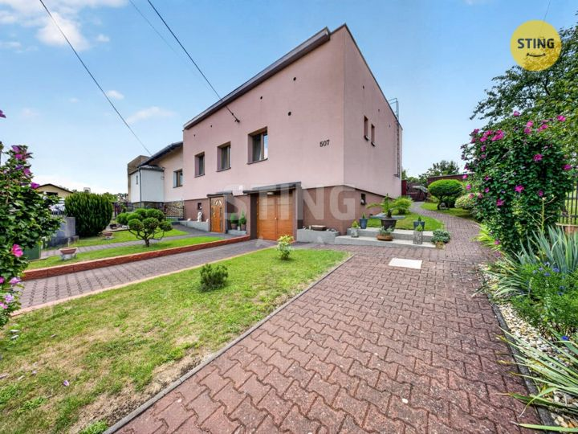
Price reduced
Prodej domu/vily, 164 m²
Prodej domu/vily, 164 m²
8,490,000 CZK → 7,900,000 CZK -6.95%
Original advert ↗Daily market update · 2026-11-24 · Ostrava + 15 km
Data limitation: Prices are advertised, not completed transaction prices. Disappeared adverts are NOT proof of sold or rented status. Search radius may be unverified for individual locations. "New" means first observed since a comparable complete Sreality scan, not independently verified as newly published. "New to tracker" may reflect expanded or partial portal coverage. Older Sreality IDs and known cross-lists are excluded. Additional monthly rental charges are not reliably supplied in these search cards.

Prodej domu/vily, 164 m²
8,490,000 CZK → 7,900,000 CZK -6.95%
Original advert ↗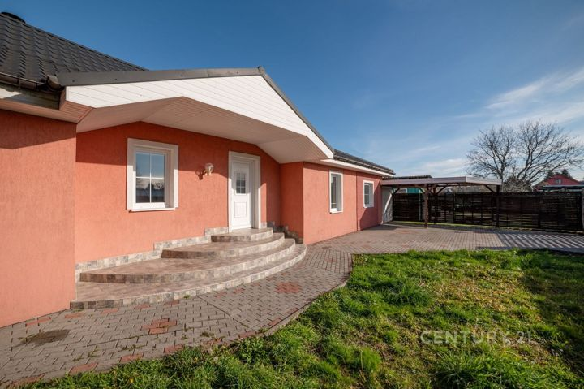
Prodej domu/vily, 98 m²
Not stated → 7,890,000 CZK
Original advert ↗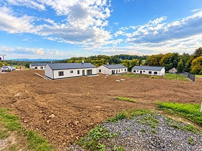
Těrlicko, Karviná
8,950,000 CZK → 8,950,000 CZK
Original advert ↗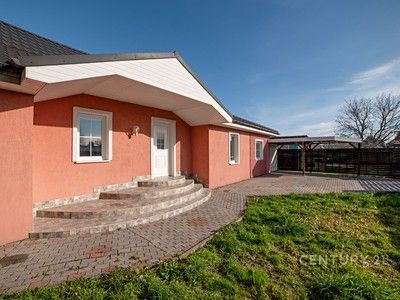
Bartovice, Ostrava-město
Not stated → 7,890,000 CZK
Original advert ↗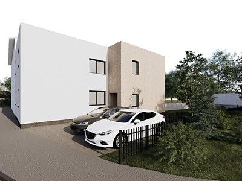
Bohumín, Karviná
2,799,999 CZK → Not stated
Original advert ↗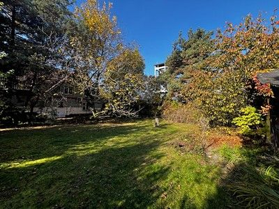
Přívoz, Ostrava-město
Not stated → 8,890,000 CZK
Original advert ↗
Řepiště, Frýdek-Místek
9,500,000 CZK → 9,500,000 CZK
Original advert ↗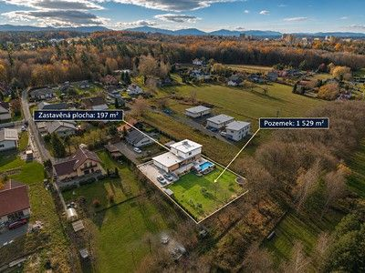
Prostřední Suchá, Karviná
Not stated → 12,900,000 CZK
Original advert ↗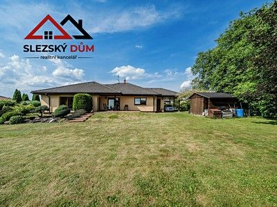
Lutyně, Karviná
9,500,000 CZK → 9,500,000 CZK
Original advert ↗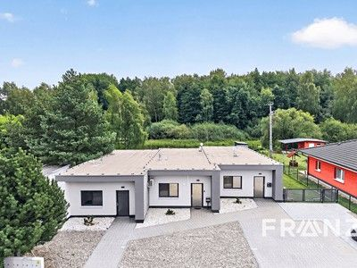
Hlučín, Opava
7,290,000 CZK → 7,290,000 CZK
Original advert ↗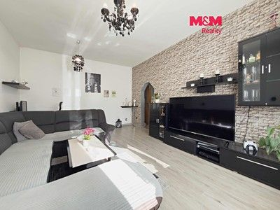
Poruba, Karviná
5,490,000 CZK → 5,490,000 CZK
Original advert ↗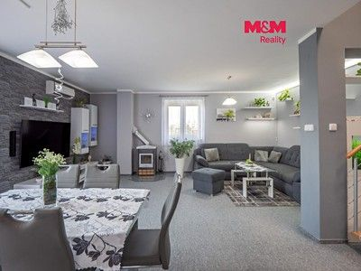
Slezská Ostrava, Ostrava-město
10,700,000 CZK → 10,700,000 CZK
Original advert ↗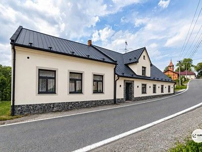
Hukvaldy, Frýdek-Místek
6,499,000 CZK → 6,499,000 CZK
Original advert ↗
Petřvald, Nový Jičín
4,200,000 CZK → Not stated
Original advert ↗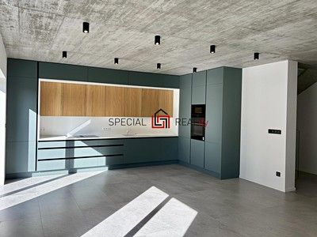
Dolní Lhota, Ostrava-město
14,990,000 CZK → Not stated
Original advert ↗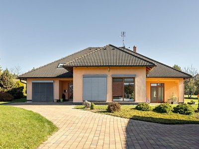
Horní Těrlicko, Karviná
16,600,000 CZK → Not stated
Original advert ↗
Dobrá, Frýdek-Místek
8,200,000 CZK → 8,200,000 CZK
Original advert ↗
Jistebník, Nový Jičín
3,499,000 CZK → 3,499,000 CZK
Original advert ↗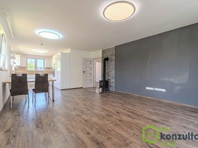
Šenov, Ostrava-město
7,700,000 CZK → 7,700,000 CZK
Original advert ↗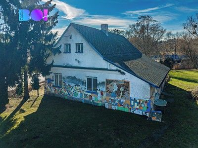
Bludovice, Karviná
3,900,000 CZK → Not stated
Original advert ↗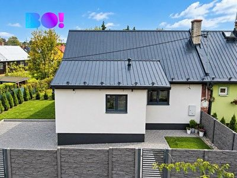
Muglinov, Ostrava-město
7,900,000 CZK → 7,900,000 CZK
Original advert ↗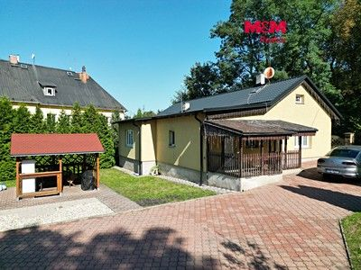
Hrušov, Ostrava-město
5,995,000 CZK → Not stated
Original advert ↗
Místek, Frýdek-Místek
12,350,000 CZK → 12,350,000 CZK
Original advert ↗
Lutyně, Karviná
4,990,000 CZK → 4,990,000 CZK
Original advert ↗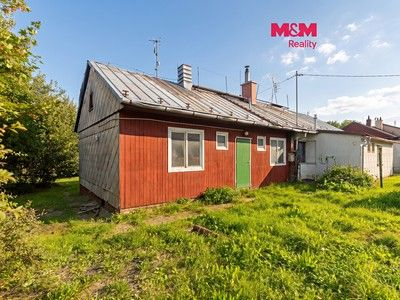
Slezská Ostrava, Ostrava-město
2,500,000 CZK → 2,500,000 CZK
Original advert ↗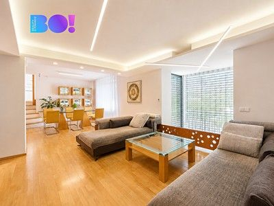
Rychvald, Karviná
10,990,000 CZK → 10,990,000 CZK
Original advert ↗
Borová, Opava
6,800,000 CZK → Not stated
Original advert ↗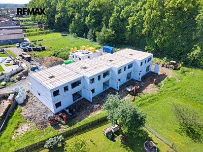
Bartovice, Ostrava-město
13,432,500 CZK → Not stated
Original advert ↗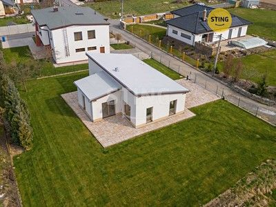
Kobeřice, Opava
9,990,000 CZK → Not stated
Original advert ↗
Skalice, Frýdek-Místek
8,999,000 CZK → 8,999,000 CZK
Original advert ↗
Staré Město, Karviná
7,490,000 CZK → 7,490,000 CZK
Original advert ↗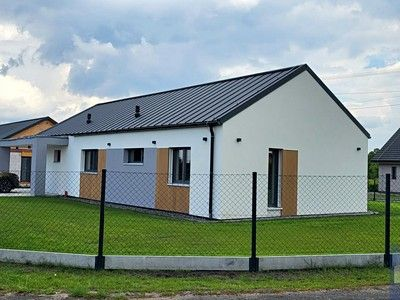
Petřvald, Karviná
9,999,000 CZK → 9,999,000 CZK
Original advert ↗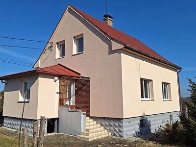
Žermanice, Frýdek-Místek
5,400,000 CZK → 5,400,000 CZK
Original advert ↗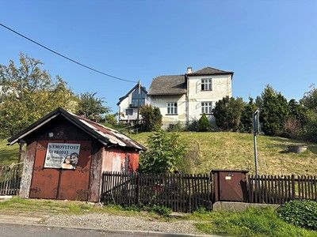
Darkovice, Opava
6,120,000 CZK → 6,120,000 CZK
Original advert ↗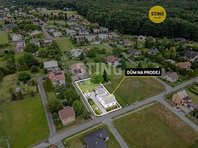
Bartovice, Ostrava-město
9,300,000 CZK → 9,300,000 CZK
Original advert ↗
Nová Bělá, Ostrava-město
19,990,000 CZK → Not stated
Original advert ↗
Kunčice, Ostrava-město
4,250,000 CZK → Not stated
Original advert ↗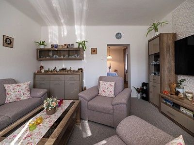
Bartovice, Ostrava-město
9,300,000 CZK → 9,300,000 CZK
Original advert ↗
Poruba, Karviná
4,100,000 CZK → Not stated
Original advert ↗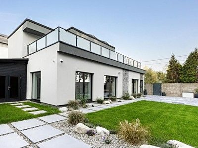
Stará Bělá, Ostrava-město
17,990,000 CZK → 17,990,000 CZK
Original advert ↗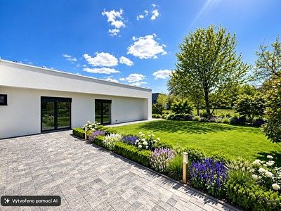
Bartovice, Ostrava-město
13,990,000 CZK → 13,990,000 CZK
Original advert ↗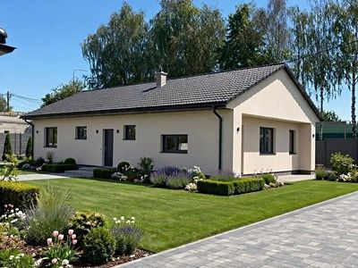
Dolní Lutyně, Karviná
6,500,000 CZK → 6,500,000 CZK
Original advert ↗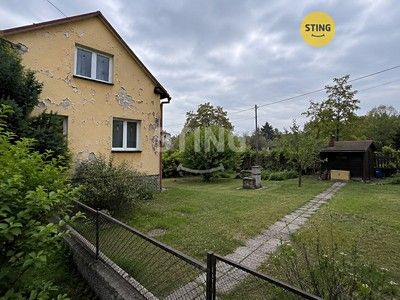
Vratimov, Ostrava-město
4,550,000 CZK → Not stated
Original advert ↗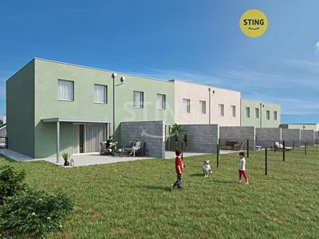
Kobeřice, Opava
8,500,000 CZK → Not stated
Original advert ↗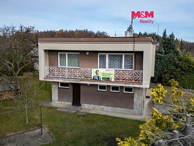
Hlubočec, Opava
Not stated → 4,690,000 CZK
Original advert ↗
Heřmanice, Ostrava-město
2,770,000 CZK → 2,770,000 CZK
Original advert ↗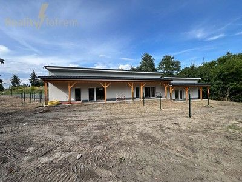
Petřvald, Karviná
6,790,000 CZK → 6,790,000 CZK
Original advert ↗
Horní Těrlicko, Karviná
6,690,000 CZK → Not stated
Original advert ↗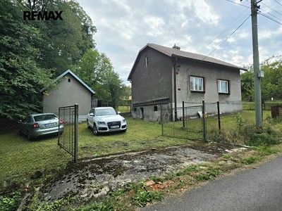
Rychvald, Karviná
3,700,000 CZK → 3,600,000 CZK -2.7%
Original advert ↗
Prostřední Bludovice, Karviná
6,390,000 CZK → Not stated
Original advert ↗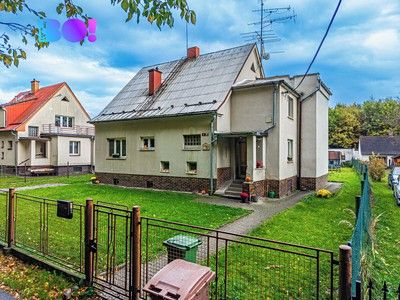
Prostřední Suchá, Karviná
5,900,000 CZK → 5,900,000 CZK
Original advert ↗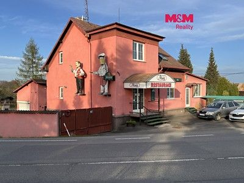
Lutyně, Karviná
5,832,750 CZK → Not stated
Original advert ↗
Pustějov, Nový Jičín
4,370,000 CZK → Not stated
Original advert ↗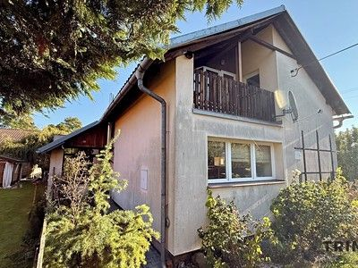
Klimkovice, Ostrava-město
5,990,000 CZK → Not stated
Original advert ↗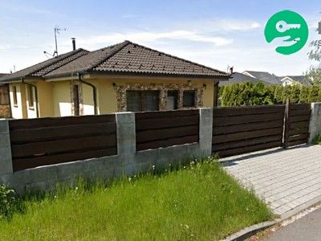
Polanka nad Odrou, Ostrava-město
13,147,179 CZK → Not stated
Original advert ↗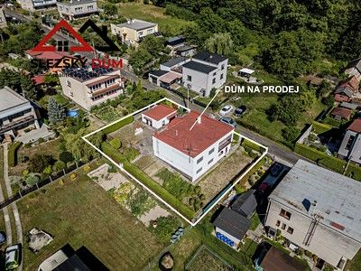
Dětmarovice, Karviná
4,990,000 CZK → 4,990,000 CZK
Original advert ↗
Bolatice, Opava
8,900,000 CZK → Not stated
Original advert ↗
Suché Lazce, Opava
5,190,000 CZK → Not stated
Original advert ↗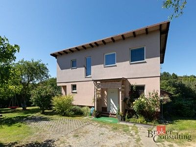
Lazy, Karviná
6,999,000 CZK → 6,999,000 CZK
Original advert ↗
Staré Město, Karviná
7,490,000 CZK → 7,490,000 CZK
Original advert ↗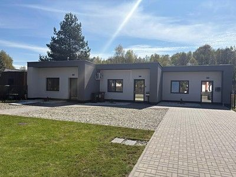
Hlučín, Opava
6,399,000 CZK → 6,199,000 CZK -3.13%
Original advert ↗Hlučín, Opava
6,399,000 CZK → 6,199,000 CZK
Original advert ↗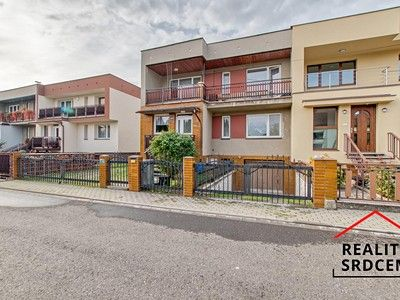
Sviadnov, Frýdek-Místek
6,900,000 CZK → 6,900,000 CZK
Original advert ↗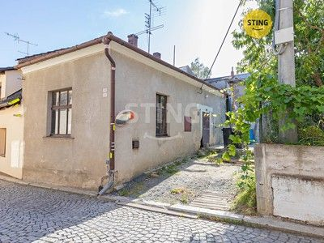
Bílovec, Nový Jičín
2,475,000 CZK → 2,475,000 CZK
Original advert ↗
Krásné Pole, Ostrava-město
34,900,000 CZK → Not stated
Original advert ↗
Pustějov, Nový Jičín
3,850,000 CZK → Not stated
Original advert ↗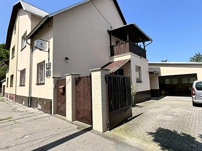
Přívoz, Ostrava-město
7,490,000 CZK → 7,490,000 CZK
Original advert ↗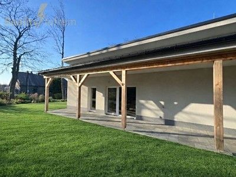
Petřvald, Karviná
6,790,000 CZK → 6,790,000 CZK
Original advert ↗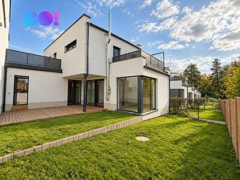
Muglinov, Ostrava-město
13,400,000 CZK → 13,400,000 CZK
Original advert ↗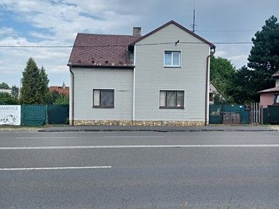
Místek, Frýdek-Místek
5,199,000 CZK → 5,199,000 CZK
Original advert ↗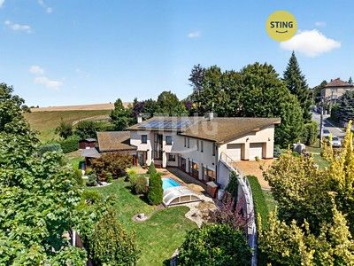
Krásné Pole, Ostrava-město
16,900,000 CZK → 16,900,000 CZK
Original advert ↗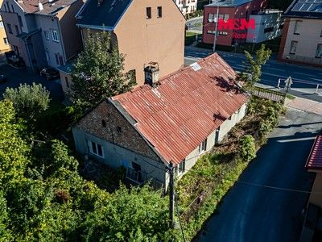
Slezská Ostrava, Ostrava-město
2,500,000 CZK → 2,500,000 CZK
Original advert ↗Poruba, Karviná
6,999,999 CZK → 6,999,999 CZK
Original advert ↗
Polanka nad Odrou, Ostrava-město
20,900,000 CZK → Not stated
Original advert ↗Horní Těrlicko, Karviná
9,950,000 CZK → 9,950,000 CZK
Original advert ↗
Šenov, Ostrava-město
7,999,000 CZK → 7,999,000 CZK
Original advert ↗
Frýdek, Frýdek-Místek
7,600,000 CZK → Not stated
Original advert ↗Kujavy, Nový Jičín
6,399,000 CZK → 6,399,000 CZK
Original advert ↗Petřvald, Karviná
6,650,000 CZK → 6,650,000 CZK
Original advert ↗
Plesná, Ostrava-město
12,870,000 CZK → Not stated
Original advert ↗Polanka nad Odrou, Ostrava-město
7,590,000 CZK → 7,590,000 CZK
Original advert ↗Šenov, Ostrava-město
7,700,000 CZK → 7,700,000 CZK
Original advert ↗
Petřkovice, Ostrava-město
8,790,000 CZK → Not stated
Original advert ↗Orlová, Karviná
5,150,000 CZK → 4,990,000 CZK -3.11%
Original advert ↗Petřvald, Karviná
5,990,000 CZK → 5,990,000 CZK
Original advert ↗Šilheřovice, Opava
2,970,000 CZK → Not stated
Original advert ↗Petřvald, Karviná
Not stated → 7,150,000 CZK
Original advert ↗Příbor, Nový Jičín
16,400,000 CZK → 16,400,000 CZK
Original advert ↗Zábřeh, Ostrava-město
Not stated → 9,800,000 CZK
Original advert ↗
Píšť, Opava
3,350,000 CZK → Not stated
Original advert ↗Petřvald, Karviná
Not stated → 7,999,000 CZK
Original advert ↗Ostrava, Ostrava-město
10,490,000 CZK → 10,490,000 CZK
Original advert ↗Petrovice u Karviné, Karviná
4,770,000 CZK → 4,770,000 CZK
Original advert ↗
Horní Suchá, Karviná
6,999,000 CZK → 6,990,000 CZK -0.13%
Original advert ↗
Dolní Lutyně, Karviná
7,499,000 CZK → 7,499,000 CZK
Original advert ↗
Jistebník, Nový Jičín
5,100,000 CZK → Not stated
Original advert ↗
Kujavy, Nový Jičín
7,299,000 CZK → 7,299,000 CZK
Original advert ↗
Bolatice, Opava
4,900,000 CZK → Not stated
Original advert ↗Polanka nad Odrou, Ostrava-město
8,490,000 CZK → 7,900,000 CZK -6.95%
Original advert ↗Polanka nad Odrou, Ostrava-město
8,490,000 CZK → 7,900,000 CZK
Original advert ↗Fryčovice, Frýdek-Místek
6,500,000 CZK → 6,500,000 CZK
Original advert ↗
Dolní Lutyně, Karviná
2,500,000 CZK → 2,500,000 CZK
Original advert ↗Šumbark, Karviná
6,150,000 CZK → Not stated
Original advert ↗Dolní Lutyně, Karviná
4,790,000 CZK → 4,500,000 CZK -6.05%
Original advert ↗Dolní Lutyně, Karviná
4,790,000 CZK → 4,500,000 CZK
Original advert ↗Hlučín, Opava
7,900,000 CZK → 7,900,000 CZK
Original advert ↗Horní Datyně, Ostrava-město
12,590,000 CZK → 12,590,000 CZK
Original advert ↗Svinov, Ostrava-město
13,900,000 CZK → 13,900,000 CZK
Original advert ↗Chuchelná, Opava
4,000,000 CZK → 4,000,000 CZK
Original advert ↗Dětmarovice, Karviná
13,990,000 CZK → 13,990,000 CZK
Original advert ↗Šenov, Ostrava-město
5,790,000 CZK → Not stated
Original advert ↗Bítov, Nový Jičín
6,250,000 CZK → 6,250,000 CZK
Original advert ↗Poruba, Karviná
2,400,000 CZK → Not stated
Original advert ↗Skřečoň, Karviná
6,590,000 CZK → 6,590,000 CZK
Original advert ↗Výškovice, Ostrava-město
Not stated → 12,900,000 CZK
Original advert ↗Dětmarovice, Karviná
9,599,000 CZK → 9,599,000 CZK
Original advert ↗
Albrechtice, Karviná
2,990,000 CZK → Not stated
Original advert ↗
Vřesina, Opava
9,990,000 CZK → Not stated
Original advert ↗
Kunčičky, Ostrava-město
10,970,000 CZK → Not stated
Original advert ↗
Petřvald, Karviná
3,300,000 CZK → 3,300,000 CZK
Original advert ↗